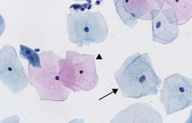

Definition
Gynecological cytology involves the examination of cells from the female reproductive tract for the detection and evaluation of benign, infectious, premalignant, and malignant conditions.
Clinical Significance
Cytologic evaluation plays an important role in the detection of cervical epithelial abnormalities.
Gynecological cytology is the examination of cells obtained from the female reproductive tract for the detection and evaluation of benign, infectious, premalignant, and malignant conditions.
Major Topics
Specimen Collection
Gynecological cytologic specimens may be collected from the cervix and other sites of the female reproductive tract.
Cytopreparation
Proper fixation, processing, and staining are important for producing an adequate and diagnostically useful specimen.
Screening and Diagnosis
Cytology plays an important role in the detection of cervical epithelial abnormalities and may be used in conjunction with human papillomavirus testing and other ancillary studies.
Important Concept
Human papillomavirus (HPV) infection is the primary cause of cervical cancer and is an important consideration in gynecological cytology.
Certain cellular changes, such as koilocytosis, may be associated with HPV infection.
Persistent infection with high-risk HPV is the primary cause of cervical cancer.
High-risk HPV types are strongly associated with cervical squamous and glandular neoplasia.
Remember that LSIL and HSIL are cytologic diagnoses within the Bethesda System.
Major Areas of Gynecological Cytology
- Normal cytology: Identification of normal cellular components.
- Benign conditions: Reactive, inflammatory, and other non-neoplastic changes.
- Infectious organisms: Identification of organisms and associated cellular changes.
- Squamous lesions: Evaluation of squamous epithelial abnormalities.
- Glandular lesions: Evaluation of endocervical and other glandular abnormalities.
Basic Cytology Concepts
| Term | Description |
|---|---|
| Cytology | The study and examination of individual cells. |
| Specimen | Material collected for cytologic examination. |
| Cytopreparation | The processing of a specimen to produce a slide for microscopic evaluation. |
Study Resources
- Lecture notes
- Textbooks
- Research articles
- Clinical guidelines
- Microscopic images